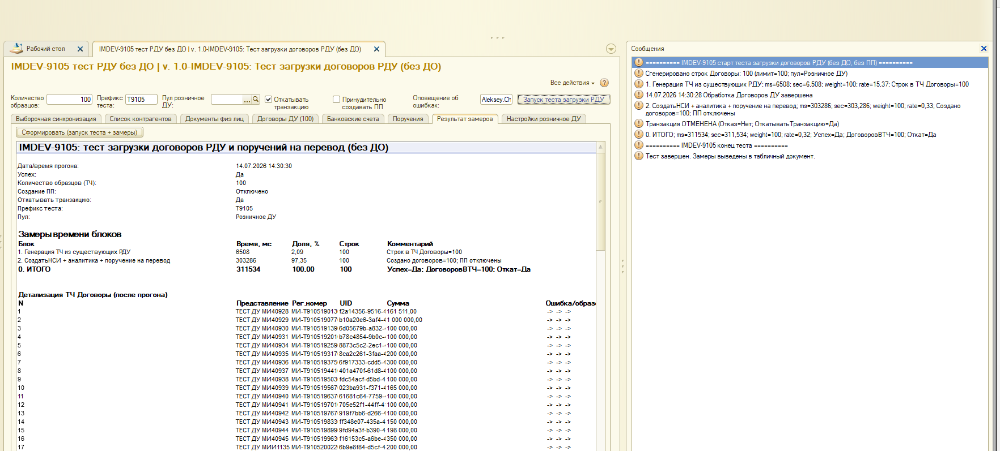
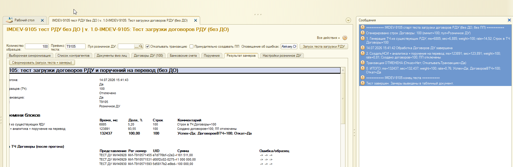

Сравнение прогонов: гипотеза подтверждена, индекс сработал
ДоговорДУ / РольДоговора в
Справочник.ДоговорыКонтрагентов дала ожидаемый эффект:
ИТОГО 311.5 с → 132.4 с (−58%),
узкий SELECT почти исчез (172 с → 1.2 с).
Прогон снова успешен, без ДО, с откатом транзакции.
Один и тот же сценарий до и после изменения метаданных: имитация загрузки 100 розничных РДУ без Документооборота и без ПП, затем откат транзакции.
СинхронизацияНСИ: СоздатьНСИ → аналитика → поручение на перевод.| Параметр | Значение (оба прогона) |
|---|---|
| Образцов | 100 |
| Префикс | T9105 |
| Пул | Розничное ДУ |
| ПП | Отключено |
| Откат транзакции | Да |
| Отличие прогонов | только индекс на полях отбора в ДоговорыКонтрагентов |


Клик по картинке открывает оригинал. Файлы лежат рядом в папке Тестирование/.
| Блок | Было | Стало | Дельта |
|---|---|---|---|
| 1. Генерация ТЧ | 6.5 с (2%) | 6.9 с (5%) | ~0 (шум) |
| 2. СоздатьНСИ + аналитика + поручение | 303.3 с (97%) | 123.9 с (94%) | −179 с (−59%) |
| ИТОГО | 311.5 с | 132.4 с | −179 с (−58%), ×2.35 |
| Скорость (блок 2) | 0.33 дог/с | 0.81 дог/с | ×2.45 |
ДоговорыКонтрагентов
по ДоговорДУ + РольДоговора без индекса (два call-site).
| Строка PFF (тот же запрос) | Было, self | Стало, self | Ускорение |
|---|---|---|---|
L3335 · ДоговорКонтрагента (N=400) |
128.4 с (41.6%) | 0.96 с | ×133 |
| L3199 · торговый код / ЕБС (N=100) | 43.6 с (14.1%) | 0.24 с | ×184 |
| Сумма TOP-2 | 172.0 с (55.7%) | 1.20 с | −171 с |
Экономия по ИТОГО (−179 с) почти целиком совпадает с исчезновением этих двух строк (−171 с). Гипотеза подтверждена численно.
ВЫБРАТЬ ДоговорыКонтрагентов.Ссылка ИЗ Справочник.ДоговорыКонтрагентов ГДЕ Владелец = &Владелец И ДоговорДУ = &ДоговорДУ И РольДоговора = &РольДоговора
Новый TOP self после индекса (фрагмент):
| # | Место | self, с | N | Комментарий |
|---|---|---|---|---|
| 1 | Подписка CSV · Запись.Записать |
10.3 | 1700 | Побочный эффект записи объектов |
| 2 | АналитическийПризнакиБрокерскогоСчета · запрос L3380 |
8.6 | 100 | Следующий кандидат среди запросов в аналитике |
| 3 | ДокументУП.Записать(Проведение) |
7.7 | 100 | Проведение учётной политики |
| 4 | ДоговорКонтрагента.Записать |
7.7 | 400 | Само создание (уже не поиск) |
| 5 | РС интеграции с ДО (локальный поиск) | 6.9 | 200 | Не внешняя база ДО |
| Без индекса | После индекса | |
|---|---|---|
| Скриншот | Тест_100ДоговоровДУ.png | Тест_100ДоговоровДУ_ПослеИндексирования.png |
| Сообщения / макет | Сообщения_100.txt |
Сообщения_100_Индекс.txt |
| Отладчик | Отладчик_100.pff |
Отладчик_100_Индексация.pff |
{kind=link}
{kind=link}